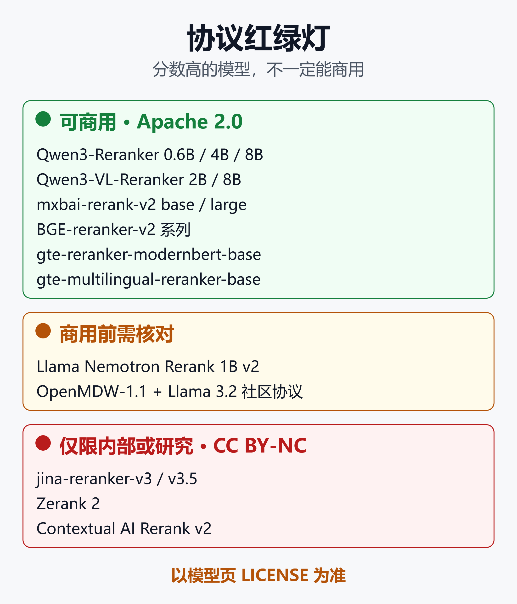
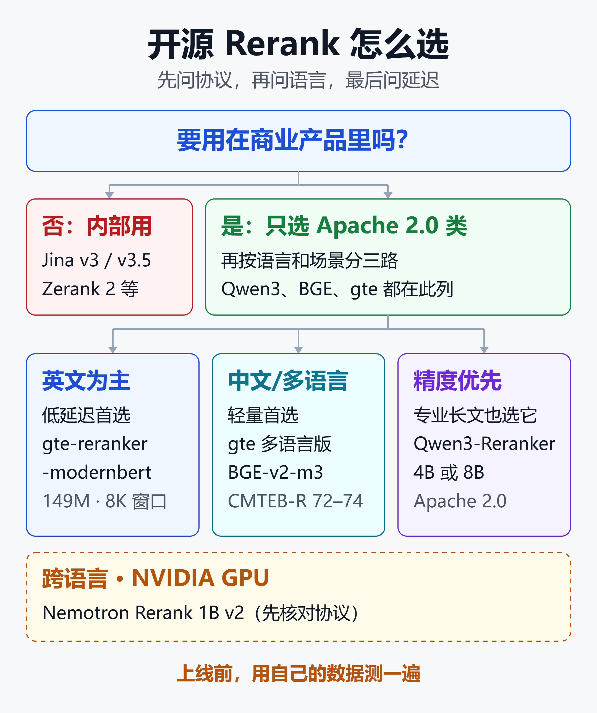

开源 Rerank 模型选型：Qwen3、Jina、BGE、mxbai 谁该进你的 RAG
在 AIMultiple 的一次测试里，检索器和 300 条查询都不变，只在后面加一个重排模型，Top-1 命中率就从 62.67% 升到 83.00%，多了 20.33 个百分点。
但同一份测试里，一个 70M 的小重排模型只把命中率抬到 64.67%，差距落在噪声范围内。
这就是重排模型的现状：选对了，是 RAG 里性价比最高的升级；选错了，只是多了一层延迟。更麻烦的是，榜单靠前的一批模型，协议是非商用。
本文把 2026 年常见的开源 Rerank 模型放到同一张桌子上，按三件事收敛：精度口径、延迟成本、协议能不能商用。
文末有一张可以直接对照的选型决策表。文中跑分大多是厂商或第三方自测，口径各不相同，会逐项标注。
一、重排在 RAG 里做什么
向量检索负责"广撒网"：Embedding 模型把查询和文档各自编码成向量，比的是向量距离。速度快，但模型从没把两段文字放在一起读过。
重排负责"精挑选"：把查询和候选文档拼成一对，让模型联合阅读，直接给出相关度。常见做法是先召回 50 到 100 条，再重排出 3 到 5 条交给大模型。
两点要先讲清楚。
- 重排救不了漏掉的文档。AIMultiple 测试里，召回 250 条相比 100 条几乎没有增益，最好的几个重排模型最后都停在 87% 到 88% 的 Hit@10，天花板由检索器决定。
- 重排不一定有益。是否值得上，要在自己的数据上对比有无重排的成绩。
三种常见架构
| 架构 | 代表 | 特点 |
|---|---|---|
| 交叉编码器 | BGE、gte、Nemotron | 单次前向，速度稳 |
| 生成式打分 | Qwen3-Reranker | yes/no 打分，较慢 |
| 列表式 | Jina v3 系列 | 一次处理整批候选 |
- 交叉编码器：输入一对文本，输出一个分数。结构最简单，部署最成熟。
- 生成式打分：把重排当成问答，读完后比较 yes 与 no 的概率。能力强，但每个候选都要过一遍大模型。
- 列表式：把查询和所有候选放进同一个上下文，一次前向就给出整批排序，候选之间还能互相参照。
架构直接决定延迟，这一点后面还会用数据说明。
二、候选模型逐个看
Qwen3-Reranker：开源重排的新默认
阿里 Qwen 团队 2025 年 6 月开源，0.6B、4B、8B 三档，协议 Apache 2.0。
- 支持 100 多种语言和编程语言，上下文 32K。
- 支持自定义指令。官方称加指令通常能提升 1% 到 5%，建议指令用英文写。
- 默认输出是原始 logit 差值。要做阈值过滤，需要套一层 Sigmoid 转成 0 到 1 的概率。
- 可用 Sentence Transformers 的 CrossEncoder 直接加载，Transformers 需 4.51.0 以上。
它的短板是速度。生成式打分要走完整的大模型前向，后面的延迟账里 8B 档是最慢的一个。
Jina Reranker v3 / v3.5：小而快，但不能商用
v3 在 2025 年 10 月发布，v3.5 在 2026 年 8 月 5 日发布，都是 0.6B，基于 Qwen3-0.6B，上下文 131K。
- 列表式打分：官方称为"last but not late"。查询和候选在同一个上下文里做因果注意力，再从每篇文档末尾取向量，用余弦相似度排序。
- 候选有上限：v3 单次最多处理 64 篇，更多要分批。v3.5 的博客也坦承，列表式模型在候选数和总长度上存在上限。
- v3.5 的提速：大部分全局注意力层换成窗口 1024 的滑动窗口，官方称长文档重排最多快 1.56 倍。
- 协议是 CC BY-NC 4.0，v3 与 v3.5 的模型页都是如此。商用要走 Jina API，或者通过 Elastic Inference Service 使用。
- 加载需要 trust_remote_code。生产环境建议固定版本并审查代码。
v3 的模型页已经提示，新项目优先用 v3.5。
mxbai-rerank-v2：Apache 2.0 的 1.5B 选项
Mixedbread 在 2025 年 3 月发布，base（0.5B）与 large（1.5B）两档，协议 Apache 2.0。
- 基座是 Qwen-2.5，用强化学习训练，官方称支持 100 多种语言。
- 上下文 8K，兼容 32K，对 JSON、代码、工具检索也做了适配。
- 官方 BEIR 成绩（BM25 做第一阶段）：large 57.49，base 55.57，高于 Cohere rerank-3.5 的 55.39 和 BGE-reranker-v2-m3 的 53.94。
需要留意的是，在 Jina 的多语言测试里，mxbai-base 的 MIRACL 成绩是 64.90，低于同量级的 Qwen3-0.6B（67.12）和 Jina v3.5（74.11）。从数据看，它更适合英文和代码场景。
BGE-reranker-v2 系列：最广泛使用的基线
智源（BAAI）出品，协议 Apache 2.0，Hugging Face 页面显示近 30 天下载量约 1570 万，是装机量最大的开源重排模型。
- bge-reranker-v2-m3：基于 bge-m3，约 568M，多语言、轻量、易部署。
- bge-reranker-v2-gemma：约 2.5B，多语言场景下精度更高。
- bge-reranker-v2-minicpm-layerwise：可选择输出层数（8 到 40 层），在速度和精度间调节，官方建议中英文场景使用。
它的问题是"老"。在 Agentset 的 LLM 评审榜单里，v2-m3 排在列表末尾，和 Jina v2 并列。UsefulAI 的评测也提到，它为短段落调优，长文本默认会被截断，需要手动调高长度限制。
gte 系列：149M 的小模型也能打
阿里通义实验室的两个 Apache 2.0 模型：
- gte-reranker-modernbert-base：149M，英文为主，上下文 8192，自报 BEIR 56.19。
- gte-multilingual-reranker-base：约 0.3B，多语言。在 Qwen 官方对照表里，它的 CMTEB-R 是 74.08，高于 BGE-v2-m3 的 72.16。
AIMultiple 的实测里，149M 的 gte-reranker-modernbert 与 1.2B 的 Nemotron 同为 83.00% 的 Hit@1。
Llama Nemotron Rerank 1B v2：跨语言与 NVIDIA 生态
NVIDIA 开源，基于 Llama-3.2-1B，改成双向注意力，上下文 8192，在 26 种语言上评估过，强项是查询与文档语言不同的跨语言检索。
协议是 OpenMDW-1.1，并附带 Llama 3.2 社区协议，模型卡写明可商用。官方支持路径依赖较新的 NVIDIA GPU。UsefulAI 的对比里，它的 8K 上下文是最短的。
其他值得知道的
- Qwen3-VL-Reranker（2B、8B，Apache 2.0）：Qwen3-Embedding 的多模态版，输入可以是文本、图片、截图和视频。图文混合的 RAG 可以考虑，选型思路见 多模态 RAG 选哪个向量模型？按场景、显存、协议给出的 2026 选型决策表。
- Zerank 2（ZeroEntropy）：Agentset 榜单第一，但协议是 CC BY-NC 4.0，商用要走付费授权。同门的 Zerank 1 Small 是 Apache 2.0，偏英文。
- Contextual AI Rerank v2：强调用指令按时效、权威度调整排序，协议同为非商用。
三、同一批模型，三套数据三种结论
不同评测的第一阶段召回器、数据集和指标都不一样，分数不能直接横向比。先看一个典型例子：同一个 mxbai-rerank-base-v2，在三份资料里的 BEIR 成绩不同。
| 来源 | 第一阶段召回 | BEIR |
|---|---|---|
| mxbai 官方 | BM25 | 55.57 |
| Jina v3 发布文 | jina-embeddings-v3 | 58.40 |
| Jina v3.5 发布文 | jina-embeddings-v5 | 59.58 |
模型没变，口径一变，差了 4 个点。下面四份数据，各自回答的是不同的问题。
1. Qwen 官方：中英文都是 Qwen3 领先
下表来自 Qwen3-Reranker 模型卡，Qwen3-Embedding-0.6B 一行是向量检索基线。
| 模型 | MTEB-R | CMTEB-R |
|---|---|---|
| Embedding-0.6B（基线） | 61.82 | 71.02 |
| BGE-reranker-v2-m3 | 57.03 | 72.16 |
| gte 多语言版 | 59.51 | 74.08 |
| Qwen3-Reranker-0.6B | 65.80 | 71.31 |
| Qwen3-Reranker-4B | 69.76 | 75.94 |
| Qwen3-Reranker-8B | 69.02 | 77.45 |
多语言 MMTEB-R 上的排序类似：Qwen3 的 0.6B、4B、8B 分别为 66.36、72.74、72.94，BGE-v2-m3 为 58.36，gte 多语言版为 59.44。
三个读法：
- 英文差距大：Qwen3-0.6B 的 MTEB-R 比 BGE-v2-m3 高约 9 分。
- 中文差距小：CMTEB-R 上，BGE-v2-m3 和 gte 多语言版甚至高于 Qwen3-0.6B。
- 小模型增益有限：Qwen3-0.6B 的 CMTEB-R 只比基线高 0.3，4B 才拉开约 5 分。
这是模型作者自报的成绩，口径偏向自家模型的强项，参考价值高但不是独立评测。
2. Jina v3.5：0.6B 追平 4B，但只在英文通用上
下面是 Jina 团队的统一测试：所有模型都对 jina-embeddings-v5-text-small 召回的前 100 条重排，指标是 nDCG@10。
| 模型 | BEIR | MIRACL |
|---|---|---|
| 第一阶段召回（基线） | 56.26 | 65.15 |
| jina-v3.5（0.6B） | 63.20 | 74.11 |
| mxbai-large-v2（1.5B） | 62.45 | 69.65 |
| Qwen3-Reranker-4B | 62.28 | 76.56 |
| Qwen3-Reranker-0.6B | 56.94 | 67.12 |
| mxbai-base-v2（0.5B） | 59.58 | 64.90 |
再看专业领域的 RTEB（法律、金融、代码、医疗）和半结构化检索的 Struct-IR：
| 模型 | RTEB | Struct-IR |
|---|---|---|
| Qwen3-Reranker-4B | 77.68 | 55.6 |
| jina-v3.5 | 70.95 | 48.3 |
| mxbai-large-v2 | 70.81 | 43.0 |
| Qwen3-Reranker-0.6B | 68.41 | 41.9 |
| mxbai-base-v2 | 61.44 | 30.4 |
结论分两半：
- 英文通用检索：v3.5 的 63.20 超过 4B 的 Qwen3（62.28），参数少约 7 倍。
- 多语言与专业领域：Qwen3-4B 仍然领先，RTEB 差了近 7 分，Struct-IR 差 7 分以上。Jina 的博客自己也承认，剩余差距集中在法律、医疗和低资源语言。
另外要看到，数据由 Jina 自测，召回器用的是自家 embedding。同时，两个小模型在个别榜单上低于召回基线：mxbai-base 的 RTEB 61.44 低于基线 64.60，MIRACL 64.90 也低于 65.15。
3. AIMultiple：英文评论检索，小模型不输大模型
AIMultiple 在 H100 上，用约 14.5 万条英文亚马逊评论、300 条查询，对 multilingual-e5-base 召回的前 100 条重排，取前 10。
| 模型 | Hit@1 | 重排延迟 |
|---|---|---|
| 无重排（基线） | 62.67% | — |
| mxbai-xsmall（70M） | 64.67% | — |
| Qwen3-Reranker-4B | 77.67% | 超过 1 秒 |
| jina-reranker-v3 | 81.33% | 188ms |
| Nemotron-rerank-1B | 83.00% | 243ms |
| gte-modernbert（149M） | 83.00% | 未单列 |
这份数据给出三点：
- 最大的模型不一定最好：4B 的 Qwen3 排第四，延迟是 Nemotron 的 4.5 倍左右。
- 149M 追平 1.2B：gte-modernbert 与 Nemotron 的 Hit@1 同为 83.00%。
- 极小的模型可能无效：70M 的 mxbai-xsmall 只比基线高 2 个点。
这份测试是英文、短文本、单一数据集，不能外推到中文或长文档。
4. Agentset：LLM 评审的 ELO 榜
Agentset 用 6 个数据集，对 bge-small-en-v1.5 召回的前 50 条重排，由 GPT-5 两两评审，算 ELO。榜单更新于 2026 年 2 月。
- 开源可商用的最高是 Qwen3-Reranker-8B，ELO 1473，胜率 51%。
- BGE-reranker-v2-m3 与 Jina v2 并列末位，ELO 1327，胜率分别是 29% 和 28%。
- 榜单前列是 Zerank 2（1638）、Cohere Rerank 4 Pro（1629）等，前者非商用，后者闭源。
这个榜里没有 Qwen3-4B、Jina v3 系列、mxbai v2 和 Nemotron，覆盖面有限。
交叉起来看
四份数据口径不同，但有几处共同点：
- 重排确实有用：加对模型能带来几十个点的 Hit@1 提升，是性价比最高的升级之一。
- 大不等于好：英文短文本里，149M 到 1B 的模型已经追平或超过 4B 的 Qwen3。
- 召回器越强，小重排模型的边际收益越小。Jina 的表里，mxbai-base 在两个榜单上低于召回基线；Qwen 自己的表里，0.6B 档在中文上只比基线高 0.3。
- BGE-v2-m3 已是旧基线。中文上仍有竞争力，但英文和 LLM 评审榜上都被新模型拉开。
- 专业领域和多语言，大模型仍有优势。Qwen3-4B 在 RTEB、MIRACL、Struct-IR 上稳定领先 Jina v3.5。
四、延迟与成本账
重排是在线链路上的串行环节，延迟比精度更容易被忽视。下面的数字口径不同，请只看量级。
- UsefulAI 的托管 API 延迟：Jina v3 约 167ms，Nemotron 1B 约 223ms，Qwen3-0.6B 约 445ms，BGE-v2-m3 约 2383ms，Qwen3-8B 约 4687ms。托管延迟包含网络和排队，不等于自建延迟。
- AIMultiple 的 H100 实测：对 100 个候选打分，Jina v3 约 188ms，Nemotron 约 243ms，Qwen3-4B 超过 1 秒。
- Jina 自测的 A100 数据：v3.5 重排 100 个候选，短文档约 305ms；平均 1900 token 的长文档约 10.3 秒，比 v3 的 16.1 秒快约 1.56 倍。
规律很明确：延迟 ≈ 候选数 × 文档长度 × 单次推理成本。生成式大模型单次成本最高，列表式模型一次前向摊薄成本，但受候选数上限约束。
几个压缩延迟的做法：
- 把候选数从 100 降到 30 到 50，先看精度掉多少。
- 把文档切到 300 到 500 个 token，避免长文本拖慢整批。
- 使用 fp16 和 FlashAttention-2。Qwen 官方建议开启 flash_attention_2。
- 考虑量化版本。Jina v3 与 v3.5 官方提供 GGUF 和 MLX 版，Qwen3-Reranker 在社区也有 GGUF 量化版。
- 重排和后续生成并行流水化，避免整条链路串行等待。
Agentset 的经验值是：多数重排器会增加 100 到 600ms 的延迟。如果你的预算低于这个量级，优先考虑 149M 到 1B 的轻量模型。
五、协议红绿灯
榜单上分数高的模型，有不少不能直接商用。下图把本文涉及的模型按协议分成三档。

图里的结论如下：
- 可商用（Apache 2.0）：Qwen3-Reranker、Qwen3-VL-Reranker、mxbai-rerank-v2、BGE-reranker-v2 系列、gte-reranker-modernbert、gte-multilingual-reranker-base。
- 商用前需核对：Nemotron Rerank 1B v2，协议是 OpenMDW-1.1 加 Llama 3.2 社区协议，模型卡写明可商用，但仍需法务确认。
- 仅限内部或研究（CC BY-NC 4.0）：jina-reranker-v3 与 v3.5、Zerank 2、Contextual AI Rerank v2。
协议字段取自各模型 Hugging Face 页面的元数据。三条经验：
- 读 LICENSE 文件，别只看标签。Nemotron 的字段只写 other，要点进去看正文。
- 榜单名次和能不能商用是两回事。Agentset 前十名里，有三个是非商用权重。
- 想用非商用模型，先问清授权方式。Jina 与 Zerank 都提供付费 API，是可选路径。
六、选型决策表
下图把选型拆成两个问题：先问协议，再问语言和场景。

文字版决策表如下。首选依据上文的数据与协议整理，属于判断而不是定论。
| 场景 | 首选 | 备选 |
|---|---|---|
| 通用 RAG，中英混合 | Qwen3-Reranker-4B | mxbai-large-v2 |
| 精度优先，不怕慢 | Qwen3-Reranker-8B | Qwen3-Reranker-4B |
| 中文为主，轻量 | gte 多语言版 | BGE-v2-m3 |
| 英文为主，低延迟 | gte-modernbert | Nemotron 1B v2 |
| 跨语言，有 NVIDIA GPU | Nemotron 1B v2 | Qwen3-Reranker-4B |
| 法律、医疗、金融长文 | Qwen3-Reranker-4B | Jina v3.5（仅内部） |
| CPU 或边缘设备 | BGE-v2-m3 | Qwen3-Reranker-0.6B |
| 图文混合 RAG | Qwen3-VL-Reranker | 先转文本再重排 |
| 仅内部使用或研究 | Jina v3.5 | Zerank 2 |
几点补充说明：
- 为什么通用场景放 Qwen3-4B：协议清楚，在多语言和专业领域稳定领先，4B 是精度和成本之间的折中。8B 的 CMTEB-R 更高，但延迟是明显的代价。
- 为什么中文轻量放 gte 多语言版：官方表里它的 CMTEB-R 高于 BGE-v2-m3，MLDR（长文档）也高出约 7 分。BGE 的优势是生态最成熟。
- 为什么 Jina 只放内部：精度和速度都有亮点，但商用必须走付费 API。
- 极轻量场景要小心：mxbai-base 在个别榜单上低于召回基线，Qwen3-0.6B 也只比基线高零点几到几分，上线前必须对照有无重排的结果。
七、上线前怎么验证
榜单是参考，不是结论。三家数据都说明，口径一换，名次就变。建议用自己的数据评一遍。
最小评测流程
- 准备 200 到 500 条真实查询，标好正确文档。
- 同时留相近的干扰文档，比如同一份制度的不同版本。
- 中英文分开评，跨语言查询单独测一组。
- 对比四组：无重排、0.6B 档、4B 档、候选数 30 与 100。
- 指标看 Hit@1、nDCG@10，同时记录 p95 延迟。
Qwen3-Reranker 的最小调用如下，用法以官方模型卡为准：
from sentence_transformers import CrossEncoder
model = CrossEncoder("Qwen/Qwen3-Reranker-8B")
# 换成 0.6B 或 4B 的名字即可
hits = model.rank(query, docs, top_k=5)
for h in hits:
print(h["corpus_id"], round(h["score"], 2))
Hit@1 的计算只需要几行：
def hit_at_1(ranked, gold):
hits = [r[0] == g for r, g in zip(ranked, gold)]
return sum(hits) / len(gold)
五个容易踩的坑
- 召回不够，重排无力：先看 Hit@100，如果召回阶段就漏了，换重排模型没用。
- 分数不能跨查询比较：Qwen3 默认输出的是 logit 差值，做阈值过滤要先过 Sigmoid。
- 长文本被悄悄截断：BGE-v2-m3 默认按短段落调优，长 chunk 需要调高长度限制。
- 指令别漏：Qwen3 不加指令会掉 1% 到 5%，指令用英文写。
- 自定义代码要审查：Jina 的模型要求 trust_remote_code，生产环境应固定版本。
搭配与部署
重排不必单独使用。常见组合是向量召回加 BM25 关键词召回，再统一送入重排。混合检索的原理见 BM25 没有过时，反而在大规模 RAG 里赢了：原理、混合检索与最新规模研究。
向量库的选型见 2026 开源向量库全景对比：Milvus、Qdrant、Weaviate、pgvector 到底怎么选。
想把 Embedding 和 Rerank 一起私有化部署，可以参考 Xinference部署与应用实战2026：一个平台搞定LLM+Embedding+Rerank的私有化推理。推理引擎的取舍见 大模型推理框架选型2026：vLLM、SGLang、TensorRT-LLM、Ollama、Xinference五大框架怎么选。
小结
开源重排模型这一年进步很快，小模型追平大模型的例子越来越多。但选型的关键，已经不是谁的分数最高。
- 先看协议：Jina、Zerank 精度和速度都亮眼，但商用要付费授权。
- 再看语言：中文轻量用 gte 多语言版或 BGE-v2-m3，多语言和专业领域用 Qwen3-4B 或 8B。
- 再看延迟：生成式的 Qwen3 慢，列表式的 Jina 和分类式的 gte、Nemotron 快。
- 别信单一榜单：同一个模型换个口径差好几个点，召回越强，小重排模型的收益越小。
无论选哪个，都先用自己的数据对比有无重排，再决定要不要上线。
免责声明
本文基于公开的模型卡、技术博客与第三方评测整理，文中跑分多为厂商或评测方自测，口径各不相同，数值不能直接横向比较。延迟数字来自不同硬件与托管服务，仅供量级参考。协议信息取自 Hugging Face 页面元数据，商用前请以官方仓库的 LICENSE 文件为准并咨询法务。本文不构成技术选型、法律或商用授权建议。
参考来源
- Hugging Face —— Qwen/Qwen3-Reranker-8B 模型卡
- Qwen 官方博客 —— Qwen3 Embedding: Advancing Text Embedding and Reranking Through Foundation Models
- arXiv —— Qwen3 Embedding 技术报告
- arXiv —— Qwen3-VL-Embedding and Qwen3-VL-Reranker: A Unified Framework for Multimodal Retrieval and Ranking
- Jina AI —— Jina Reranker v3: 0.6B Listwise Reranker for SOTA Multilingual Retrieval
- Hugging Face 博客 —— jina-reranker-v3.5: Faster Listwise Reranking with Hybrid Attention and Self-Distillation
- Hugging Face —— jinaai/jina-reranker-v3.5 模型卡
- Hugging Face —— jinaai/jina-reranker-v3 模型卡
- Elastic Search Labs —— Jina Reranker v3.5: faster legal, medical and structured search
- Mixedbread —— Baked-in Brilliance: Reranking Meets RL with mxbai-rerank-v2
- Hugging Face —— BAAI/bge-reranker-v2-m3 模型卡
- Hugging Face —— Alibaba-NLP/gte-reranker-modernbert-base 模型卡
- Hugging Face —— nvidia/llama-nemotron-rerank-1b-v2 模型卡
- AIMultiple —— Reranker Benchmark: Top 8 Models Compared
- Agentset —— Best Rerankers for RAG 榜单
- GitHub —— agentset-ai/reranker-eval
- UsefulAI —— Best Reranker Models for RAG in 2026